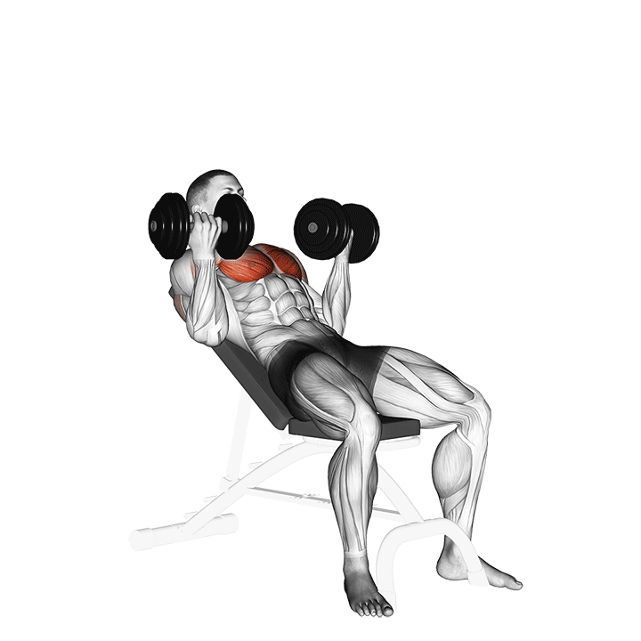

1. Press pecho supino
Press principal del día para pecho, con apoyo importante de tríceps y hombro anterior.
Técnica clave: pies firmes, escápulas estables y recorrido controlado.
Tip: baja con control y empuja sin perder la posición de hombros.
Error común: abrir demasiado los codos o rebotar abajo.
Temporizador de descanso
01:30
Registro
Sin registro guardado todavía.